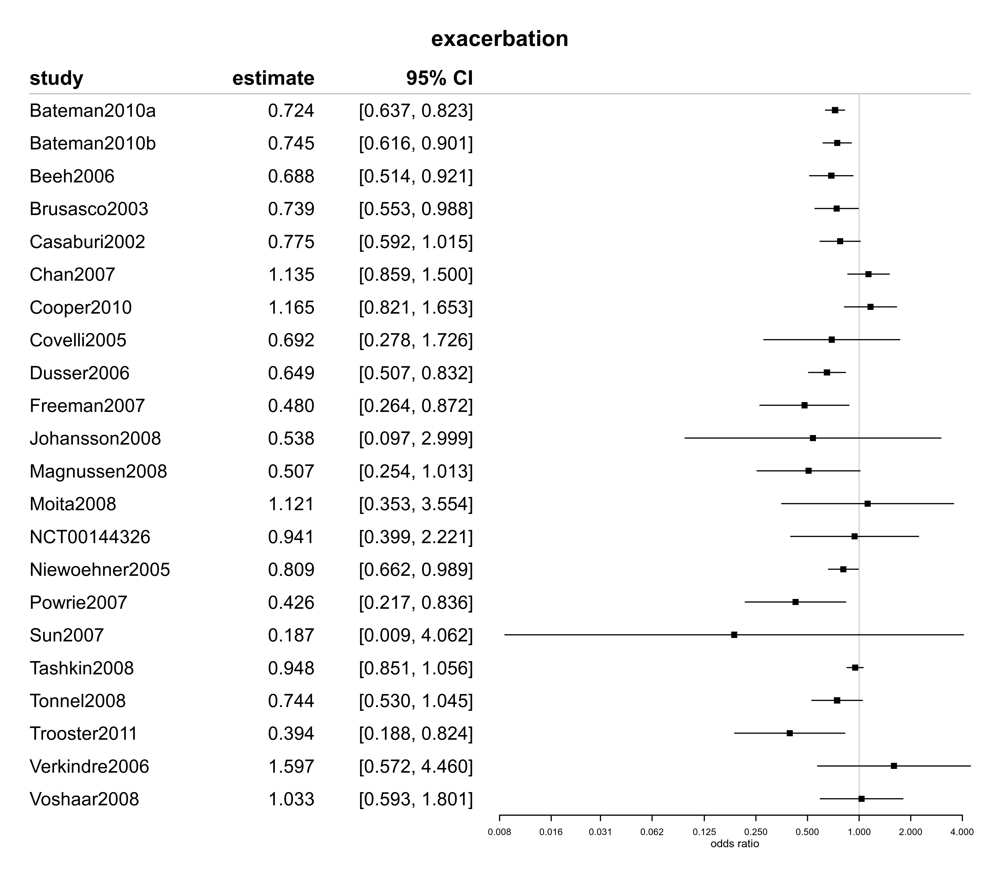

dat.karner2014.RdData on several endpoints and risk-of-bias from a systematic review of studies on tiotropium in patients with chronic obstructive pulmonary disease (COPD).
dat.karner2014The data frame contains the following columns:
| study | character | publication identifier (first author and publication year) |
| year | numeric | publication year |
| duration | factor | study duration (\(<1\) year vs. \(\geq 1\) year) |
| inhaler | factor | type of inhaler investigated (“dry powder” or “soft mist”) |
| baseline.age | numeric | mean age at baseline |
| baseline.males | numeric | proportion of males among study participants |
| baseline.fev1 | numeric | mean FEV1 at baseline (L) |
| baseline.fev1pp | numeric | mean FEV1 (percent of predicted) at baseline |
| baseline.pyr | numeric | mean number of pack-years (smoking history) |
| tiotropium.total | numeric | total number of patients in the treatment group |
| tiotropium.exa | numeric | number of patients with \(\geq 1\) exacerbation in the treatment group |
| tiotropium.sexa | numeric | number of patients with \(\geq 1\) severe exacerbation in the treatment group |
| tiotropium.hospi | numeric | number of patients with \(\geq 1\) hospitalization (all-cause) in the treatment group |
| tiotropium.deaths | numeric | number of deaths in the treatment group |
| tiotropium.sae | numeric | number of patients with \(\geq 1\) serious adverse event (non-fatal) in the treatment group |
| tiotropium.dropout | numeric | number of withdrawals in the treatment group |
| placebo.total | numeric | total number of patients in the control group |
| placebo.exa | numeric | number of patients with \(\geq 1\) exacerbation in the control group |
| placebo.sexa | numeric | number of patients with \(\geq 1\) severe exacerbation in the control group |
| placebo.hospi | numeric | number of patients with \(\geq 1\) hospitalization (all-cause) in the control group |
| placebo.deaths | numeric | number of deaths in the control group |
| placebo.sae | numeric | number of patients with \(\geq 1\) serious adverse event (non-fatal) in the control group |
| placebo.dropout | numeric | number of withdrawals in the control group |
| sgrq.md, sgrq.se | numeric | mean difference and associated standard error for St. George's respiratory questionnaire (SGRQ) total score |
| fev1.md, fev1.se | numeric | mean difference and associated standard error for forced expiratory volume in 1 second (FEV1, mL) |
| rob.rand | factor | random sequence generation (selection bias) |
| rob.alloc | factor | allocation concealment (selection bias) |
| rob.perf | factor | blinding of participants and personnel (performance bias) |
| rob.det | factor | blinding of outcome assessment (detection bias) |
| rob.att | factor | incomplete outcome data (attrition bias) |
| rob.rep | factor | selective reporting bias (reporting bias) |
Chronic obstructive pulmonary disease (COPD) is a chronic and progressive condition characterized by recurrent exacerbation phases. Various treatment options are available, aimed at both providing relief during an acute exacerbation, and at delaying overall disease progression. A common drug used in the management of COPD is tiotropium, a long-acting muscarinic antagonist (LAMA), which is administered via an inhaler device.
Karner et al. (2014) conducted a systematic review in order to evaluate the evidence on the effects of tiotropium in comparison to placebo. 22 placebo-controlled studies were found, and a range of endpoints and subgroups were considered. The data reproduced here relate to analyses 1.1, 1.9, 1.14, 1.15, 1.19, 1.26, 1.27, and 1.28 in the original investigation. The risk-of-bias assessments were shown in Fig. 2. A number of study-level covariables are also provided.
Karner, C., Chong, J., & Poole, P. (2014). Tiotropium versus placebo for chronic obstructive pulmonary disease. Cochrane Database of Systematic Reviews, 7, CD009285. https://doi.org/10.1002/14651858.cd009285.pub3
medicine, pulmonology, odds ratios, raw mean differences, meta-regression, risk-of-bias
dat.karner2014
#> study year duration inhaler baseline.age baseline.males baseline.fev1
#> 1 Bateman2010a 2010 1 year or longer soft mist 65 0.78 1.10
#> 2 Bateman2010b 2010 1 year or longer soft mist 65 0.74 1.06
#> 3 Beeh2006 2006 up to 1 year dry powder 62 0.76 1.30
#> 4 Brusasco2003 2003 up to 1 year dry powder 64 0.77 1.10
#> 5 Casaburi2002 2002 1 year or longer dry powder 65 0.64 1.00
#> 6 Chan2007 2007 1 year or longer dry powder 67 0.60 0.97
#> 7 Cooper2010 2010 1 year or longer dry powder 65 0.77 1.10
#> 8 Covelli2005 2005 up to 1 year dry powder 65 NA 1.00
#> 9 Dusser2006 2006 1 year or longer dry powder 65 0.88 1.40
#> 10 Freeman2007 2007 up to 1 year dry powder 65 NA 1.30
#> 11 Johansson2008 2008 up to 1 year dry powder 62 NA 2.10
#> 12 Magnussen2008 2008 up to 1 year dry powder 60 0.61 1.50
#> 13 Moita2008 2008 up to 1 year dry powder 64 0.95 1.20
#> 14 NCT00144326 2005 up to 1 year dry powder 63 0.78 1.30
#> 15 Niewoehner2005 2005 up to 1 year dry powder 68 0.98 1.00
#> 16 Powrie2007 2007 1 year or longer dry powder 66 NA 1.30
#> 17 Sun2007 2007 up to 1 year dry powder 62 NA 1.30
#> 18 Tashkin2008 2008 1 year or longer dry powder 65 0.75 1.10
#> 19 Tonnel2008 2008 up to 1 year dry powder 64 0.86 1.40
#> 20 Trooster2011 2011 up to 1 year dry powder 62 0.69 2.00
#> 21 Verkindre2006 2006 up to 1 year dry powder 60 0.94 1.10
#> 22 Voshaar2008 2008 up to 1 year soft mist 64 0.70 1.10
#> baseline.fev1pp baseline.pyr tiotropium.total tiotropium.exa tiotropium.sexa tiotropium.hospi
#> 1 40 45 1989 685 161 304
#> 2 38 48 1337 495 78 198
#> 3 45 36 1236 180 29 55
#> 4 39 43 402 129 48 48
#> 5 39 NA 550 198 30 90
#> 6 39 51 608 268 51 105
#> 7 38 52 260 112 21 57
#> 8 39 66 100 9 2 5
#> 9 48 43 500 213 28 88
#> 10 49 37 200 19 2 7
#> 11 73 31 107 2 0 3
#> 12 53 34 228 13 4 9
#> 13 NA NA 147 6 1 5
#> 14 46 NA 123 11 2 6
#> 15 36 68 914 255 64 NA
#> 16 50 55 69 30 2 15
#> 17 47 NA 30 0 0 NA
#> 18 39 49 2987 2001 759 1369
#> 19 44 44 266 101 11 40
#> 20 66 NA 238 11 NA NA
#> 21 35 44 46 10 0 2
#> 22 52 52 360 43 2 11
#> tiotropium.deaths tiotropium.sae tiotropium.dropout placebo.total placebo.exa placebo.sexa
#> 1 52 342 318 2002 842 198
#> 2 34 233 251 653 288 44
#> 3 2 63 218 403 80 7
#> 4 1 37 62 400 156 90
#> 5 7 99 103 371 156 35
#> 6 13 108 135 305 125 19
#> 7 6 63 66 259 102 16
#> 8 0 5 10 96 12 1
#> 9 7 86 117 510 272 33
#> 10 1 6 18 195 35 1
#> 11 0 3 2 117 4 0
#> 12 0 10 5 244 26 0
#> 13 2 4 11 164 6 1
#> 14 0 6 10 127 12 0
#> 15 22 140 149 915 296 87
#> 16 1 15 21 73 47 3
#> 17 0 0 0 30 2 2
#> 18 381 1541 1099 3006 2049 811
#> 19 3 42 39 288 130 8
#> 20 0 10 27 219 24 NA
#> 21 0 2 1 54 8 3
#> 22 2 12 34 181 21 0
#> placebo.hospi placebo.deaths placebo.sae placebo.dropout sgrq.md sgrq.se fev1.md fev1.se rob.rand
#> 1 318 38 336 373 -2.90 0.49 101 10 low
#> 2 99 10 110 205 -3.65 0.59 141 6 low
#> 3 17 2 22 90 NA NA 79 17 low
#> 4 90 5 52 103 -2.70 0.99 120 7 low
#> 5 64 7 78 103 -3.44 0.92 150 14 low
#> 6 39 2 42 84 -2.79 0.97 100 20 low
#> 7 52 6 59 96 -4.03 1.50 75 27 low
#> 8 5 0 5 17 NA NA 184 37 low
#> 9 93 8 96 147 NA NA 120 20 low
#> 10 10 4 10 33 NA NA 60 23 low
#> 11 1 1 1 4 NA NA 119 32 low
#> 12 3 2 5 11 NA NA 98 23 low
#> 13 3 0 3 11 NA NA 102 31 low
#> 14 4 0 4 15 NA NA 70 56 low
#> 15 NA 19 137 245 NA NA 100 13 low
#> 16 13 2 11 21 NA NA 190 88 low
#> 17 NA 0 0 3 NA NA 209 54 low
#> 18 1357 411 1509 1358 -2.28 0.38 107 7 low
#> 19 34 6 38 74 -4.18 1.27 104 34 low
#> 20 NA 0 11 21 NA NA 166 29 low
#> 21 6 0 6 9 -6.50 2.90 110 42 low
#> 22 5 0 5 22 NA NA 134 19 low
#> rob.alloc rob.perf rob.det rob.att rob.rep
#> 1 low low low low low
#> 2 low low low high low
#> 3 low low low unclear low
#> 4 low low low unclear low
#> 5 low low low unclear low
#> 6 low low low unclear low
#> 7 low low low high low
#> 8 low low low unclear unclear
#> 9 low low low unclear low
#> 10 low low low unclear low
#> 11 low low low low low
#> 12 low low low low low
#> 13 low low low low low
#> 14 low low low low low
#> 15 low low low unclear low
#> 16 low low low unclear low
#> 17 unclear low unclear low low
#> 18 low low low high low
#> 19 low low low unclear low
#> 20 low low low low low
#> 21 low low low unclear low
#> 22 low low low low low
library(metafor)
library(bayesmeta)
# compute effect sizes (log odds ratios) from exacerbation count data
# (using the "metafor" package's "escalc()" function)
karner.exa <- escalc(measure="OR",
ai=tiotropium.exa, n1i=tiotropium.total,
ci=placebo.exa, n2i=placebo.total,
slab=study, data=dat.karner2014)
# show forest plot
forestplot(karner.exa, title="exacerbation",
exponentiate=TRUE, xlog=TRUE,
xlab="odds ratio")

# derive St. George's Respiratory Questionnaire (SGRQ) effect sizes
# (change in SGRQ score)
karner.sgrq <- escalc(measure="MD",
yi=sgrq.md, sei=sgrq.se,
slab=study, data=dat.karner2014,
subset=is.finite(dat.karner2014$sgrq.md))
# show forest plot
forestplot(karner.sgrq, title="SGRQ", xlab="mean difference")